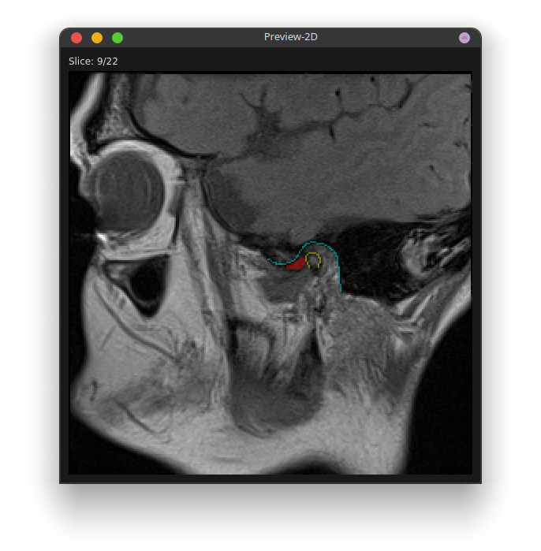
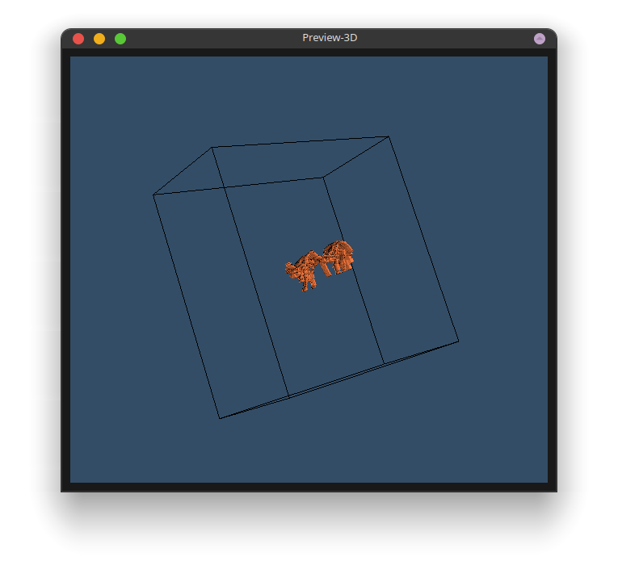

本软件可以直接使用发布者编译的二进制版本（二进制版本使用PyInstaller打包发布）
除此以外，也可以使用Python包管理软件setuptools/pip/wheel工具以Module形式进行安装
无需安装 使用二进制文件。
$ git clone -b dev https://github.com/MenxLi/LabelSys
$ cd LabelSys
$ pip install -r requirements.txt
$ pip install .
LabelSys支持3种不同类型的文件类型，分别为：DICOM文件、二维图像文件、视频文件。二维图像文件及视频文件使用OpenCV读取，支持的文件后缀可见 cv.imread及 cv.VideoCapture
根据文件类型不同，需要打开的文件夹结构如下
对于Dicom文件
[需要打开的文件夹]
|
|--[病例]0
| |--[slice0].dcm
| |--[slice1].dcm
| |--[slice2].dcm
| ∟...
|
|--[病例]1
| |--[slice0].dcm
| ∟...
|
|--[病例]2
|
∟...
∟...
对于图像文件
[需要打开的文件夹]
|
|--[病例]0
| |--[image0].jpg
| |--[image1].jpg
| |--[image2].jpg
| ∟...
|
|--[病例]1
| |--[image0].jpg
| ∟...
|
|--[病例]2
|
∟...
∟...
对于视频文件
[需要打开的文件夹]
|
|--[病例]0.mp4
|
|--[病例]1.mp4
|
|--[病例]2.mp4
|
∟...
除此之外，若要读取已保存的标签文件（见 使用LabelSys软件读取标注文件）
[需要打开的文件夹(Label-[单个患者数据]-[标注者名])]
|
|--HEAD_0.json
|
|--Slice_1.json
|
|--Slice_1.npz
|
∟...
LabelSys软件使用Json配置文件定义标注的标签种类和软件行为， 其中数据标签信息的设置位于“Labels”项目中， 一个典型的数据标签如下：
"Label_name" :{
"color": [1.0, 0.0, 0.0],
"draw": 1,
"mode": 0,
"label_step":1
}
其中
"Label_name" 应设置为标签的名称；
color 为显示的颜色，以[R, G, B]表示，取值范围为 0～1；
draw 表示鼠标绘制或者点选标记，0 表示点选标记，1 为绘制标记；
mode 表示标记模式，0 表示闭合曲线，1 为开放曲线；
label_step 为手动划定初始标记后，曲线拟合时的采样距离参数, 该参数仅在draw为1时有效。
本软件还支持对每张图片进行分类，可以在配置文件中指定可选分类，图片层面的分类位于
Classifications中，一个典型的图片层面分类选项如下：
"IQ":{
"full_name": "Image quality",
"class": ["Good", "fair"],
"description": "This is a image classification"
},
其中
"IQ" (class name)应设置为针对图像的分类名称，
可选可选分类位于class中
除了Labels和Classifications项目，conf.json 文件还提供了以下设置可以修改：
Loading_mode: 读取的文件格式——0：DICOM，1：图像，2：视频；
2D_preview_mag2 维预览时的放大倍数，需为整数；
Default_series默认图像序列，仅在 DICOM 图像包含“SeriesDescription”条目（[0x0020,
0x0011]）时有效;
Default_label默认初始标签，当切换slice时将从默认标签开始标记，当将该值设定为""时不自动切换标签;
Max_im_height最大图像高度，设置最大图像高度时，若读取图像高度大于此数值则自动缩放至此高度，
当该值设定为-1时不自动缩放。
主界面可大体分为四区：
预览界面可以在菜单栏 -> 显示中打开，包含 2D 及 3D 预览界面，方便对标注进行评估：
2D 预览界面：同时展示了所有标签，开启时主界面片层和 2D 预览同步移动
3D 预览界面（当同一序列图像大小不同时3D预览不可用）
labelSys运行
$ labelSys -h
usage: labelSys [-h] [-d] [-l] [-f FILE][--gen_conf]
[config_file]
positional arguments:
config_file Configuration file path
optional arguments:
-h, --help show this help message and exit
-d, --dev Development mode, in dev mode std streams will be shown on the terminal
-l, --load Loading mode, should be used in conjugation with -f, i.e.: -lf [labeled file path]
-f FILE, --file FILE File path to open for labeling (simply use -f) or revising (used -lf option)
--gen_conf Generate a configuration file at current working directory, then exits
--show_log Show log, then exit
文件的读取位于：菜单栏 -> 文件（Flie） -> 打开（Open）
载入已标注数据：菜单栏 -> 文件（Flie） -> 载入（Load）
读取时请选择文件夹打开，文件的储存结构见文件准备章节，
请注意读取影像文件和标注数据使用的文件结构树不同，载入标记数据后不能使用主界面中“Prev/Next Patient”切换图像序列
标注开始前通常需要设置标注者的姓名和输出路径，它们位于菜单栏 -> 设置（Settings）中，
这些信息每次打开软件后只需设置一次，之后读取文件不会改变。
若不设置输出路径，则输出路径默认为原始图像目录。
载入标记的数据时输出路径会自动设置为载入的文件路径以便储存时覆盖原文件。
常用的导航操作包括在病例或不同切片之间切换，切换不同图像序列等，他们都在菜单栏 ->
操作（Operation）中找到，常用的操作也以按钮形式展示在操作栏的上半部分，以下为鼠标
绑定的操作：
移动 – 按住空格并移动鼠标；
改变切片 – 滚动滚轮；
改变亮度/对比度 – 按住鼠标中键并拖动；
进行标记（绘制模式） – （点击/按住）并移动鼠标左键划出初始曲线，松开鼠标完成曲线绘制；
进行标记（点选模式） – 点击鼠标左键设置关键点，双击鼠标左键完成曲线绘制
点击操作栏中的保存（Save）按钮可以保存并导出对于当前病例的标记，保存的文件夹名为
“Label-[标记者姓名]-[原始文件名]”
标记完成后的文件以 json 文件保存，包含头文件“HEAD_0.json”和随后的每一片层的文件
“Slice*.json”，与图像文件“Slice*.pkl”。
标记的病例载入后可以按照前述方法修改并重新保存以覆盖原文件。
import typing
from labelSys.utils import LabelSysReader
label_dirs: typing.List[str] # Result folders (list of folder paths) to inspect
i: int # Data index
reader = LabelSysReader(label_dirs)
data_i = reader[i]